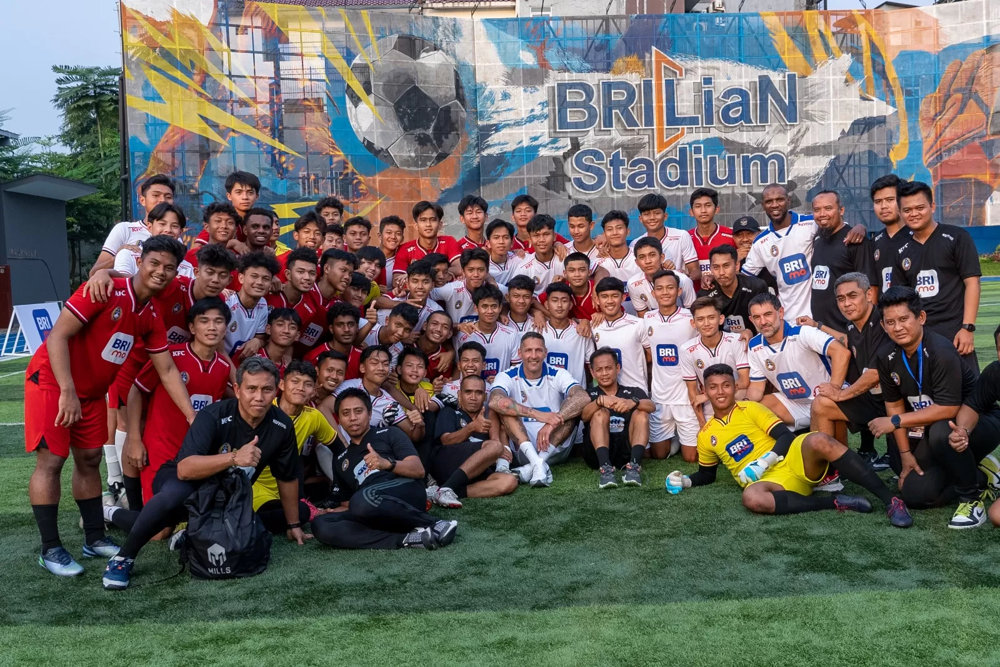
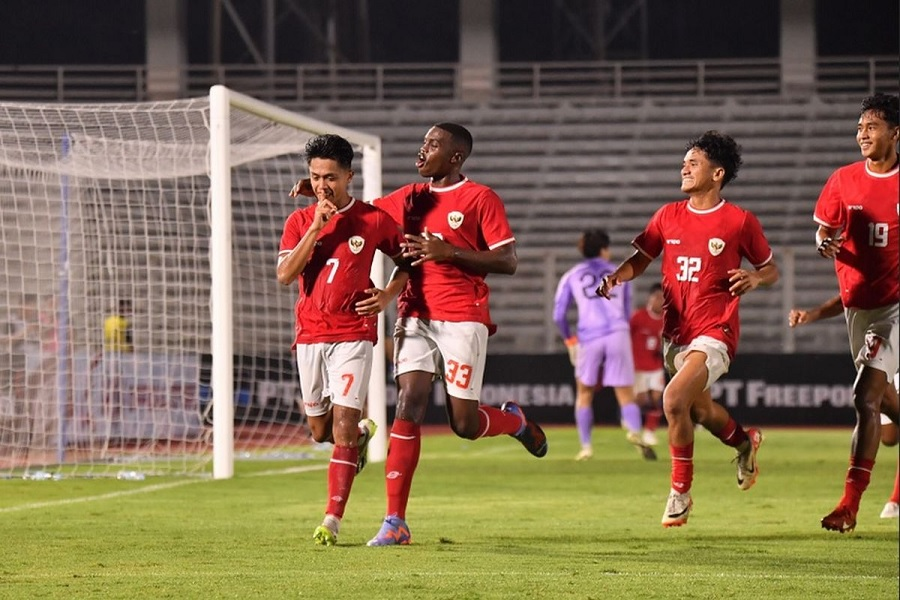
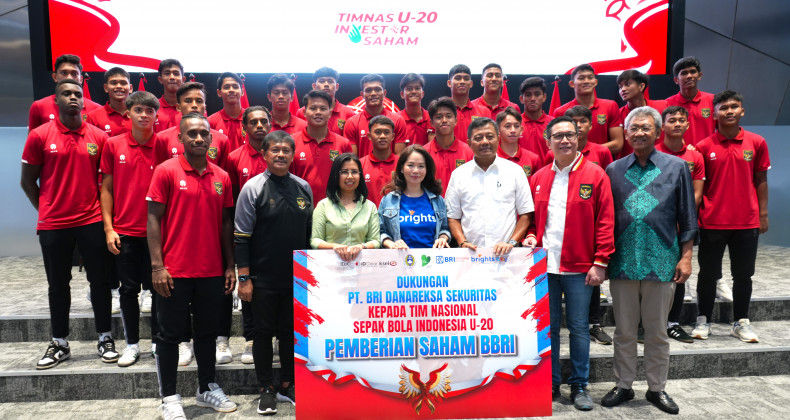

BRI sebagai Pendorong Sepak Bola Indonesia Membantu Membangun Prestasi dari Akar Rumput hingga Panggung Dunia
Sepak bola Indonesia memiliki sejarah panjang dan penggemar yang sangat besar. Namun, untuk menciptakan ekosistem yang berkelanjutan dan kompetitif, dibutuhkan dukungan yang lebih dari sekadar antusiasme penggemar. PT Bank Rakyat Indonesia (BRI), salah satu bank terkemuka di tanah air, telah aktif berperan sebagai pendorong utama dalam mengembangkan sepak bola Indonesia, mulai dari tingkat akar rumput hingga kompetisi profesional. BRI tak hanya berfokus pada aspek bisnis tetapi juga memperhatikan pembangunan bakat lokal serta memperluas akses olahraga ini bagi seluruh lapisan masyarakat.
Dukungan BRI bagi Pembinaan Talenta Muda di Daerah
Sepak bola Indonesia kaya akan talenta muda, terutama di daerah-daerah pelosok yang menjadi tempat tumbuhnya bakat-bakat baru. Namun, fasilitas dan akses yang terbatas seringkali menjadi hambatan bagi pengembangan potensi mereka. BRI hadir dengan misi untuk memperbaiki ekosistem ini dengan berbagai bentuk dukungan, mulai dari penyediaan fasilitas hingga kolaborasi dengan sekolah dan akademi sepak bola. Dengan memfasilitasi sarana latihan dan menyediakan pelatihan sepak bola berkualitas, BRI membantu anak-anak muda di berbagai daerah untuk berlatih dan mengejar cita-cita mereka.
Sumber: https://lombokpost.jawapos.com
Salah satu pemuda dari Sumatera Utara telah merasakan dampak positif dari dukungan BRI adalah Fadli Sahputra, yang berasal dari Medan. Fadli merupakan salah satu peserta dari turnamen sepak bola BRI di Sumatera Utara, yang fokus pada pencarian bakat muda untuk diangkat ke tingkat nasional. Melalui turnamen yang disponsori oleh BRI ini, Fadli mendapatkan kesempatan untuk menunjukkan bakatnya di hadapan para pemandu bakat profesional. Berkat performanya yang konsisten, ia terpilih menjadi pemain terbaik dan mendapatkan beasiswa pelatihan intensif di akademi sepak bola yang didukung BRI. Dengan dukungan ini, Fadli berhasil meningkatkan keterampilan teknisnya, memahami pola permainan yang lebih profesional, dan mendapat bimbingan dari pelatih-pelatih berpengalaman. Kini, Fadli sudah mulai dilirik oleh beberapa klub besar di Indonesia dan siap untuk melanjutkan kariernya ke level yang lebih tinggi.
Peningkatan Kompetisi Profesional Lewat Liga 1 BRI
Kompetisi yang kompetitif dan berkualitas adalah kunci bagi perkembangan sepak bola di tingkat profesional. Sejak 2021, BRI telah menjadi sponsor utama Liga 1 Indonesia, liga profesional tertinggi di tanah air. Melalui keterlibatan ini, BRI berkomitmen untuk mengangkat kualitas liga serta meningkatkan minat publik terhadap sepak bola lokal. Dengan pendanaan yang lebih besar, klub-klub bisa meningkatkan kualitas pemain, pelatih, dan fasilitas yang mereka miliki.
Sebagai sponsor utama, BRI juga mendukung berbagai kegiatan promosi yang tidak hanya menarik penonton, tetapi juga menciptakan hubungan yang lebih dekat antara klub dan penggemar. Dengan liga yang semakin kompetitif, pemain lokal memiliki kesempatan untuk mengembangkan kualitas permainan mereka, bersaing di tingkat yang lebih tinggi, dan meningkatkan nilai kompetisi nasional di mata internasional.
Mewujudkan Impian Sepak Bola Indonesia di Kancah Internasional
Sumber : https://media.otoinfo.id
Dukungan BRI terhadap sepak bola Indonesia diharapkan dapat menghasilkan dampak jangka panjang dan membawa Indonesia ke panggung dunia. Dengan fasilitas yang lebih baik, pembinaan yang berkelanjutan, dan kompetisi yang berkualitas, pemain-pemain lokal memiliki kesempatan untuk berkembang dan bersaing di level internasional. BRI berkomitmen untuk terus mendorong dan mendampingi perjalanan tim-tim lokal serta Tim Nasional dalam mencapai prestasi terbaik.
Tidak hanya di level nasional, BRI juga berharap langkah ini dapat membantu pemain Indonesia meraih kesuksesan di tingkat internasional. Dengan membawa Indonesia pada persaingan global, BRI berharap dapat membangun kepercayaan diri dan membangkitkan rasa bangga di kalangan masyarakat Indonesia.
BRI dan Masa Depan Sepak Bola Indonesia
Dukungan BRI terhadap sepak bola bukan sekadar bentuk sponsorship, melainkan sebuah investasi untuk masa depan olahraga ini di tanah air. Melalui berbagai program, pembangunan fasilitas, dan kompetisi yang lebih berkualitas, BRI berkomitmen untuk terus mendorong perkembangan sepak bola Indonesia dari akar rumput hingga ke panggung dunia. Kolaborasi antara BRI dan komunitas sepak bola Indonesia diharapkan bisa menciptakan ekosistem olahraga yang lebih baik dan menghasilkan generasi pemain yang membanggakan, baik di kancah nasional maupun internasional.
Sumber : www.bridanareksasekuritas.co.id
Dengan semangat dan dukungan yang konsisten, mimpi besar untuk melihat sepak bola Indonesia bersaing di tingkat dunia bukan lagi sekadar angan-angan, tetapi tujuan nyata yang dapat dicapai bersama.

Post a Comment